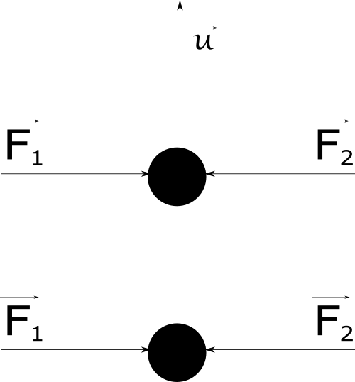
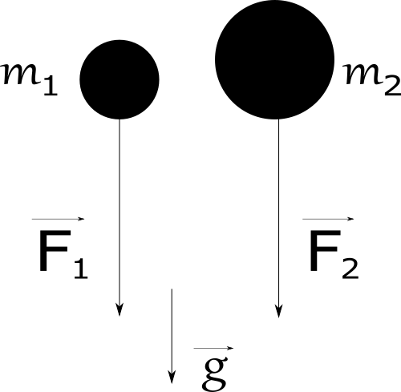
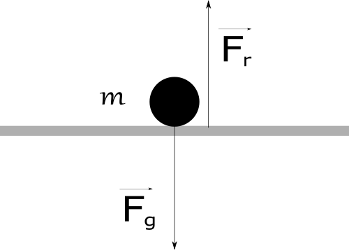
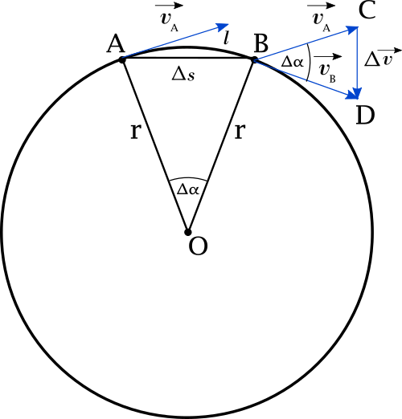

Isaac Newton
25 December 1642 – 20 March 1726
Creator of: Laws of Motion
First equation of motion
Acording to the definition, acceleration \(\vec{a}\) is change of speed \(\Delta \vec{v}\) in the time interval \(\Delta t\). In short periods of time we can write this as differential equation.
\begin{equation} \label{eq:N1}\vec{a} = \frac{d\vec{v}}{dt}\end{equation}
$$\rightarrow \vec{a} \mkern3mu dt = d\vec{v} $$
Solving this we need to integrate over velocity and time change. This is from the moment \(t_{0}\), \(v_{0}\) when the movement started, to \(v_{1}\), \(t_{1}\) when the movement was finished.
$$\vec{a} \int^{t_{1}}_{t_{0}} dt = \int^{v_{1}}_{v_{0}} d\vec{v}$$
At the beginning of the movemet time \(t_{0}\) is equal to 0 and \(v_{0}\) to \(u\). Values \(v_{1}\) and \(t_{1}\) we can put as equal to final velicoty \(v\) and entire moving time \(t\)
$$\vec{a} \int^{t}_{0} dt = \int^{v}_{u} d\vec{v}$$
After integration we get
$$\vec{a}t = \vec{v}-\vec{u}$$
Transforming this to get \(\vec{v}\)
\begin{equation} \label{eq:N2}\vec{v} = \vec{u} + \vec{a}t\end{equation}
Second equation of motion
Acording to the definition, velocity \(\vec{v}\) is change of distance \(\Delta x\) in the time interval \(\Delta t\). In short periods of time we can write this as differential equation.
\begin{equation}\vec{v} = \frac{dx}{dt}\end{equation}
Using equation \eqref{eq:N2} we get:
$$\vec{u} + \vec{a}t = \frac{dx}{dt}$$
$$\rightarrow dx = (\vec{u} + \vec{a}t)dt $$
Solving this we need to integrate over distance and time change. This is from the moment \(t_{0}\), \(s_{0}\) when the movement started, to \(s_{1}\), \(t_{1}\) when the movement was finished. Acceleration value \(a\) is constant.
$$\int^{s_{1}}_{s_{0}}dx = \int^{t_{1}}_{t_{0}} (\vec{u} + \vec{a}t)dt$$
At the beginning of the movemet time \(t_{0}\) nad distance \(x_{0}\) are bouth equal to 0 . Values \(s_{1}\) and \(t_{1}\) we can put as equal to final distance \(s\) and entire moving time \(t\).
$$\int^{s}_{0}dx = \int^{t}_{0} (\vec{u} + \vec{a}t)dt = \int^{t}_{0}\vec{u} \mkern3mu dt + \vec{a}\int^{t}_{0}t \mkern3mu dt$$
After integration we get
\begin{equation}s = \vec{u}t + \frac{\vec{a}t^{2}}{2}\end{equation}
Third equation of motion
Acording to the definition, acceleration \(\vec{a}\) can by described as below:
$$\vec{a} = \frac{dx}{dt} \frac{d\vec{v}}{dx} = \vec{v} \frac{d\vec{v}}{dx}$$
after transformation
$$\vec{a} \mkern3mu dx = \vec{v} \mkern3mu d\vec{v} $$
Solving this we need to integrate over distance and time change. This is from the moment \(\vec{v}_{0}\), \(s_{0}\) when the movement started, to \(\vec{v}_{1}\), \(s_{1}\) when the movement was finished. Acceleration value \(\vec{a}\) is constant.
$$\vec{a}\int^{s_{0}}_{s_{1}}dx = \int^{\vec{v}_{0}}_{\vec{v}_{1}}\vec{v} \mkern3mu d\vec{v} $$
At the beginning of the movemet distance \(s_{0}\) was 0, and velocity \(\vec{v}_{0}\) was equal to u. Values \(s_{1}\) and \(\vec{v}_{1}\) we can put as equal to final distance \(s\) and final velocity \(\vec{v}\).
$$\vec{a}\int^{s}_{0}dx = \int^{v}_{u}\vec{v} \mkern3mu d\vec{v} $$
After integration we get
$$\vec{a}s = \frac{\vec{v}^{2} - \vec{u}^{2}}{2}$$
after transformation
\begin{equation}\vec{v} = \sqrt{\vec{u}^{2} + 2\vec{a}s}\end{equation}
First law
If sum of all forces describled by Newtons second law acting on moving object are equal to 0, then the object will by moving with initial speed \(\vec{u}\) or stay in place.
$$if \mkern3mu \sum^{N}_{i=1}\vec{F}_{i} = 0 \rightarrow \vec{a} = 0 \quad then \quad \vec{v} = \vec{u} = constant$$
or will by staing still if \(\vec{u} = 0\).
$$if \mkern3mu \sum^{N}_{i=1}\vec{F}_{i} = 0 \rightarrow \vec{a} = 0 \quad and \quad \vec{u} = 0 \quad then \quad \vec{v} = 0$$
Second law
If moving object changes his momentum \(\vec{p}\) in time \(t\), then the force acting on this object is proportional to this momentum.
\begin{equation} \label{eq:N6} \vec{F} = \frac{d\vec{p}}{dt}\end{equation}
The momentum \(\vec{p}\) is equal to:
$$\vec{p} = m\vec{v}$$
puting this to equation \eqref{eq:N6} and considering that object mass \(m\) is constant
\begin{equation} \label{eq:N7} \vec{F} = m\frac{d\vec{v}}{dt} = m\vec{a}\end{equation}
We can consider two folling masses \(m_{1}\) and \(m_{2}\) wich constant acceleration \(\vec{g}\).
$$\vec{g} = constant$$
$$if \mkern10mu m_{2} > m_{1} \rightarrow \vec{F}_{2} > \vec{F}_{1}$$
Third law
To every action there is always opposed an equal reaction: or the mutual actions of two bodies upon each other are always equal, and directed to contrary parts.
\begin{equation}\vec{F}_{1} = - \vec{F}_{2}\end{equation}
Let's consider a ball of mass \(m\) lying on the floor. Gravity is pulling ball down with \(\vec{F}_{g}\) force thru the surface, but surface reacting to this and push ball up with the force \(\vec{F}_{r}\) of the same magnitude but in another direction.
$$\vec{F}_{r} = - \vec{F}_{g}$$
Gravitation law
The value of the linear velocity in uniform motion around the circle is constant, and is expressed through:
$$ \vec{v} = \frac{\Delta s}{\Delta t} $$
The linear speed can also be represented as the ratio of the circumference of the circle \(\pi\) to the period \(T\) where one turn was made.
$$ \vec{v} = \frac{2\pi r}{T} $$
The movement on circle is constant. We can now consider movement between two points A and B. In short period of time \(t, \alpha \rightarrow 0\) the lenght of the circle's arc \(l\) will by fast the same as lenght of direct road \(\Delta s\) between two points.
$$ l = \frac{\alpha 2\pi r}{360} \quad \Delta s = 2r sin\frac{\alpha}{2} $$
$$\lim_{\alpha \to 0}\frac{\alpha 2\pi r}{360} \quad \sim \quad \lim_{\alpha \to 0}2r sin\frac{\alpha}{2}$$
$$\Rightarrow l \sim \Delta s$$
On the sketch we see two similar triangle \(OAB\) and \(BCD\). Therefore we can write relation between them:
$$\frac{\Delta s}{r} = \frac{\Delta \vec{v}}{\vec{v}}$$
Dividing thi by time of movement \(\Delta t\) we get:
$$\frac{1}{r}\frac{\Delta s}{\Delta t} = \frac{1}{\vec{v}}\frac{\Delta \vec{v}}{\Delta t}$$
Now we can see in this equation linear speed \(\vec{v}\) and centripetal acceleration \(a_{r}\).
$$\frac{1}{r}\vec{v} = \frac{1}{\vec{v}}\vec{a}_{r}$$
\begin{equation} \label{eq:N9} \Rightarrow \vec{a}_{r} = \frac{\vec{v}^{2}}{r} \end{equation}
Comparing centripetal acceleration \eqref{eq:N9} with acceleration from Newton second law \eqref{eq:N7} we get:
$$\frac{\vec{v}^{2}}{r} = \frac{\vec{F}}{m} $$
From this, force \(\vec{F}\) that holds object on round orbit will by:
\begin{equation} \label{eq:N10}\vec{F} = \frac{m\vec{v}^{2}}{r} \end{equation}
Using equation described linear velocity on circle \(v\) and third Keppler law
$$\vec{v} = \frac{2\Pi r}{T}$$
$$kT^{2} = r^{3}$$
$$\Rightarrow \vec{v}^{2} = \frac{4\Pi^{2} r^{2}}{T^{2}} = \frac{4\Pi^{2}k r^{2}}{r^{3}} = \frac{4\Pi^{2}k}{r} $$
gravitional force will by thansform to:
$$\vec{F} = \frac{m\frac{k4\Pi^{2}}{r}}{r} = 4\Pi^{2}k\frac{m}{r^{2}}$$
force origin comes from object in centre of circle, thats why we can name this force as \(\vec{F}_{BO}\). Make in consideration Newtons third law, the same force but in opposed direction will by acting from object on orbit an object in the center.
$$\vec{F}_{OB} = 4\Pi^{2}k\frac{M}{r^{2}}$$
As force of gravity is proportional to bouth forces \(\vec{F}_{BO}\) and \(\vec{F}_{OB}\) so it must meet the combined requirement.
$$\vec{F}_{g} \sim 4\Pi^{2}k\frac{mM}{r^{2}}$$
usint constant \(G = 4\pi^{2}k\) we get all know form of gravitional law.
\begin{equation}\vec{F}_{g} = -G\frac{mM}{r^{2}}\hat{r}\end{equation}
\(G\) value was first measured by Henry Cavendish